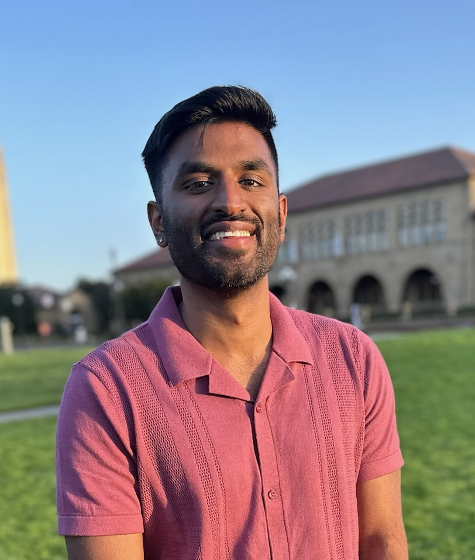

I’m a 5th year PhD Candidate in Political Science at Stanford University, from where I also received a Masters in Statistics. I study legislation organization in the US Congress, political communication, and statistical methods.
My dissertation develops an original theory of legislative organization that explains how donors affect the majority party's ability to govern. I show that certain members of Congress increasingly fundraise from networks leaders' cannot influence, contributing to congressional dysfunction by reducing leaders' capacity to discipline these members.
My work on political communication studies the drivers and consequences of elite rhetoric: what elites say, why, and how it affects their audiences. For example, I show that members of Congress do not chase user engagement on social media, but rather remain tethered to substance; changes in how mainstream media covers the news has reduced Americans' trust in the media; and election fraud claims often rely on misleading statistical argumentation rather than evocative anecdotes.
A third line of research develops new statistical methods for improving measurement and causal inference in the social sciences.
Email: acr122@stanford.edu